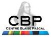

Projet de développement, administration et maintenance du site web collaboratif pour le Centre Blaise Pascal (2008 - avril 2013)¶
{kind=link}
Chef de projet : Cerasela Calugaru
Directeur de publication : Ralf Everaers
Collaborateurs : Emmanuel Quemener, Emmanuelle Foltzer, Samantha Barendson
Utilisateurs actifs de l’espacé privé collaboratif : 26
Ce site a été conçu à l’aide du TikiWiki, logiciel libre de gestion de contenu dynamique et de travail collaboratif (CMS) distribué selon les termes de la licence GNU LGPL et qui nécessite une plateforme (serveur web) de type LAMP (Linux + Apache + MySQL + PHP). Dans un premier temps, cette plateforme a été récupérée en mettant à jour le serveur web de l’ancien CECAM-Lyon pour installer la première version de TikiWiki (2.2) pour le site du CBP. Par la suite, avec l’arrivé du nouvel ingénieur de recherche en systèmes informatiques, la plateforme LAMP a été restructurée en un serveur web et un serveur base de données. Depuis, c’est sur cette plateforme que j’ai installé les nouvelles versions de Tikiwiki (3.3, 4.2, 6.7, 9.1).
Le projet de développement du site web CBP a nécessité plusieurs étapes :
Installation de TikiWiki sur le serveur web, création de la base de donnée sur le serveur MySQL et synchronisation des deux.
Configuration des fonctionnalités (formulaires, calendriers, enquêtes, galeries de fichiers, RSS, etc.)
Design du site (choix du thème, bannière d’en-tête, emplacements des photos et des textes, pied de page, couleurs des rubriques etc.)
Création des modules et définition de leur emplacement, de menus, de rubriques et pages et leur remplissage
Création de comptes utilisateur et de groupes, gestion des droits d’accès
L’administration du site web CBP consiste entre autres dans :
la création de minisites spécifiques pour des manifestations scientifiques (colloques, workshops, journées) offrant aux organisateurs et aux participants un portail collaboratif (inscription, espace d’échanges d’informations, diffusion des cours). Pour cela, il y a eu besoin d’une gestion spécifique de leur propres formulaires et fiches, enquêtes, galeries de fichiers, création de comptes « rédacteur » de minisite (et l’apprentissage des organisateurs à modifier les pages et à récupérer les fiches des formulaires du minisite). Ci-après quelques minisites conçus (qui ont été repris sous une forme simplifiée dans le nouveau site web CBP) :
Les Houches 2011 First Les Houches school in computational physics - soft matter, Jun 20, 2011 - Jul 01, 2011 (Jean-Louis Barrat, Ralf Everaers, Werner Krauth)
Les Houches 2012 Second Les Houches school in computational physics - Ab initio quantum simulations in condensed matter physics, June 12-19, 2012 (Xavier Blase, Thierry Deutsch, Jean-Louis Barrat)
Les Houches 2013 3rd Les Houches School in computational physics: DNA, from molecules to evolution, May 20-31, 2013 (Jean-Louis Barrat, Ralf Everaers)
Coarse Graining, November 29, 2011 (Paul Fleurat-Lessard, Claire Loison)
Polymer Dynamics : Entanglements and Architectures, July 26, 2011 - July 29, 2011 (Ralf Everaers, Daniel Read, Giovanni Ianniruberto, Peter Olmsted, Alexei Likhtman)
Exploring (Free) Energy Landscapes, November 20, 2012 (Paul Fleurat-Lessard, Claire Loison)
…
la création et configuration de calendriers pour gérer les réservations des salles CBP et pour diffuser des informations sur les manifestations scientifiques du CBP et d’ailleurs.
La maintenance du site web CBP nécessite en plus de l’actualisation des pages et des calendriers, la surveillance du trafic et la sécurité du site, la mise à jour du logiciel Tikiwiki et la sauvegarde du site (répertoires et fichiers Tikiwiki et de la base de données).